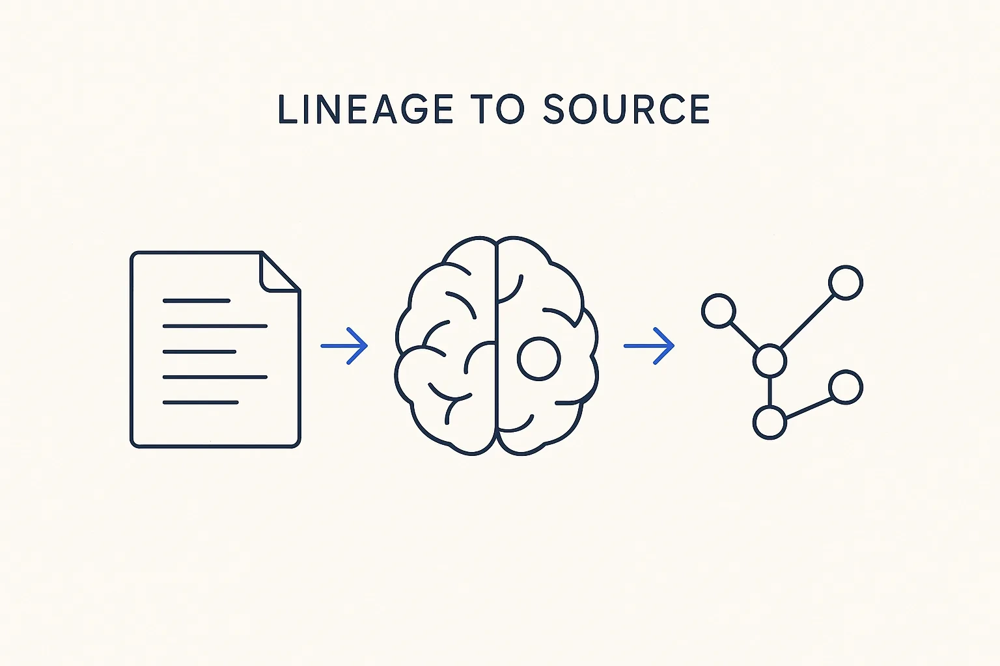

Everything is logged and git-versioned, so you can see how the company brain develops over time and trace every fact back to the source it came from.

> Everything is logged and git-versioned, so you can see how the company brain develops over time and trace every fact back to the source it came from.
Knowledge you can’t trace is knowledge you can’t trust. Lineage-to-source is the property that every fact in the company brain carries its provenance: which document, which SQL, which interview it came from — and every change is logged and git-versioned, so you can see how the brain developed over time. Ask “where did this definition come from, and who changed it, and when?” and the answer is in the record, not lost.
Two kinds of history matter here. Provenance points backward to the origin: this rule was extracted from that transformation, this definition came from that stakeholder interview. Version history shows evolution: because the metadata files live in git, you can watch the brain grow, diff two states, and roll back a mistake. Together they mean the brain is not a black box — it’s an auditable, explainable body of knowledge.
This is what makes the whole pipeline accountable. It pairs with model versioning (how the model itself changes) and underpins accountability: you can only stand behind an answer if you can show where it came from. Log everything, version everything, and the company brain stays trustworthy as it grows.
Where it lives: the lineage & governance layer of Breakthrough Modeling — every fact traceable to its source, every change in the record.